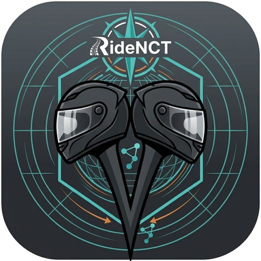

Sécurité
Quelqu'un veille sur toi
En cas de chute, RideNCT te laisse le temps de répondre, puis prévient tes proches et les riders autour de toi.
Détection de chute
Sensibilité réglable (faible, moyenne, élevée). Le mode sécurité s'active automatiquement quand tu démarres une balade.
Contacts d'urgence
Le premier est appelé, les autres reçoivent un message prérempli avec ta position GPS après le délai que tu choisis.
Alerte aux riders proches
Sans réponse de ta part à la fin du compte à rebours, les riders à moins de 1 km voient ton point sur la carte.
Respect de ta vie privée
Le radar et l'intercom fonctionnent de pair à pair, sans serveur. Un compte est nécessaire pour utiliser l'application ; il sert à vérifier ton abonnement. Le serveur ne sert qu'à cela, aux alertes de danger et aux événements. Les messages d'urgence s'ouvrent dans ton application Messages : tu les envoies toi-même.

Prêt à rouler avec RideNCT ?
L'app arrive d'abord sur Android, avec une version gratuite. Laisse-nous ton e-mail : on te prévient au départ.
Un seul e-mail, à la sortie de l'app. Rien d'autre. Confidentialité